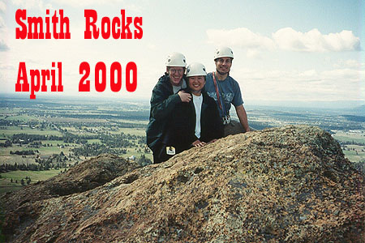
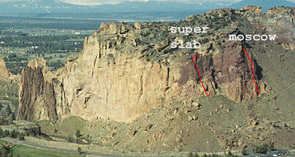
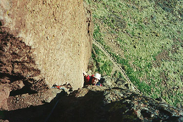
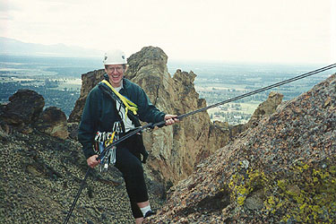
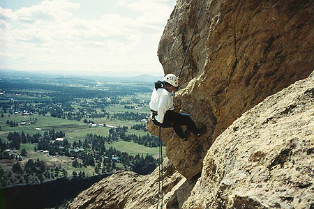
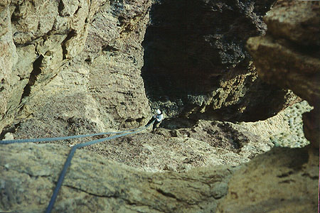
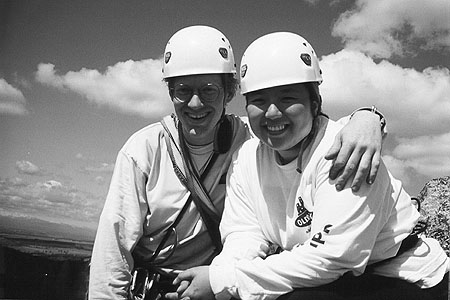

Smith Rocks
- April 8-9, 2000

Kris has been getting tired of seeing me jump in the car and zoom off to various rock climbs around the west, and in her typical fashion decided to learn how to do it so she could join me. Now for most climbing husbands, it’s a dream come true if their wife actually wants to do this stuff, and I’m no exception. Kris warns me she’ll never get very excited about snow and ice, but she can definitely get excited about climbing a cliff now and then!
So in recent months we’ve gone to the climbing gym a lot, and to some local crags like Index, Vantage and Exit 38. Going to Smith Rocks was our first “destination area” to visit together as climbers. A year ago, Kris went as photographer, getting some awesome pictures.
As a bonus, Steve would meet us on Saturday morning. Sarah was going to come too, but wasn’t feeling well. Kris and I look forward to a “double climbing date” next time! We drove up Friday after work, taking a longer route from Redmond over I-90 and through Yakima.

Faithful, true and punctual, Steve was in the parking lot when I stumbled over, shivering in the dawn. Kris was sleeping in for the morning, after a tough week at work. We drove over to the Red Wall, and geared up below Moscow, a three pitch 5.6 climb that others had spoken highly of.
As usual, we were the first ones up, and as I paid out rope for Steve, I was impressed by the quiet and stillness in this corner of the park. Steve worked his way up the crack above, occasionally jangling softly.
Squeezing into my cold rock shoes, I followed his lead, happy to be there. Mine was next, and it was a good one. A moderately steep left facing corner, this feature continued up for two pitches. It protected well, but was nicely exposed (I could see a long ways when I looked down!).
Steve took the next, which was similar, then we scrambled to the top of a buttress and sat in the sun for a few minutes. Nearby was the Misery Ridge Trail, and we scooted down to our packs, eager for the next climb.

By now, the Red Wall was full of climbers, so we went to the Dihedrals and climbs the bolted X, then did a 4th class scramble to the ridge top. We thought about doing the Christian Brothers Traverse the next day, and it looked suitably ominous. We down-climbed and rappelled, racing back to the parking lot to meet Kris.
Mmmm! She brought excellent sandwiches, and after this great lunch we all headed back to the Dihedrals. Kris was ready, but apprehensive about our first climb. Rated 5.6, Cinnamon Slab is a popular 2-pitch moderate climb. A long leaning column, the sight of the first pitch was getting Kris worried. Steve led this, then it was her turn. Despite her worries, she moved very quickly up the first two thirds, only complaining about her sore feet. She had to stand on tiptoes the whole way due to the nature of the tiny ledges on this climb. Near the top was a difficult bulge, but a tight belay from Steve and she was up! I followed gladly, then took the 2nd pitch as it started to sprinkle. Blocky knobs of rock led to an easy, steeper crack, and then to the top. Kris smiled at me all the way up, despite the increasing rain. But the rock stayed pretty dry. Once Steve was up, we started the rappels. The rain increased and Kris was getting cold. I gave her my long-sleeve polypro shirt, and she got much warmer. Soon we were at our packs, and the rain stopped. We finished the day with two routes on “Rope-de-Dope,” a house-sized block across the river.
Kris’s confidence was nicely boosted by Cinnamon Slab. We shared a great Italian meal in Redmond that night, and headed back to camp. Kris was brave enough to shower in the tepid water, but I chickened out. I’m like a cat who hates to be wet!
Sunday we were up very early despite a long night of rain. I was tempted to sleep in, but Steve wouldn’t let us. By the time we were walking over to Koala Rock, the sun was rising, and the rock was already dry. Steve had picked the route “Round River,” a 5.5 three pitch tour up and around the rock. Huffing a little, we just managed to beat a party of six to the base. If you want this climb, go very early or very late!
Despite the books description, the first pitch is very well protected by bolts (retro-bolted). I led this and got some pictures of Kris coming up, blowing on her hands due to the cold rock. She gradually learned that the cold feeling goes away after a while, and her usual brilliant smile replaced a worried expression. She was doing so well, and I really enjoyed climbing with her. Most importantly, she was having fun too. Steve did the next pitch, leaving the two lovebirds roosting on their perch! For the final pitch, I traversed around a corner, under a ledge, then up on ledges through a strange mix of decent rock with horrible sandy formations on each side. I placed a useless cam just to let Kris know where to go, since the easy route requires some meandering. She liked the pitch, and Steve soon appeared.
We got a self-timed picture on the summit, and were feeling great! This climb really has a great view onto the farms below, and the rocks to the west. We did one rappel off the back side of the rock. Kris was kind of scared about a free hanging section near the bottom, but soon realized there’s nothing to it. I caught a secret smile on her face as she slid down the rope with 20 feet of air on each side!
Steve zoomed over to Brogan Spire to secure our position and set up the rope. We had to go down a very sandy, pebbly slope to get back to our packs, and this is terrain Kris has never experienced. Initially worried, she soon learned to “ski” down in the muck, ignoring all the sand in her shoes and taking confident, sliding strides.




I belayed at the base while Steve took the first lead on Brogan Spire. A problematic climb, there is very little (or zero) protection after one good bolt near the start. The climbing is pretty easy, but there is a fair amount of friable rock all around. As most climbers would, Steve found it a little unpleasant. Kris climbed up to his tiny belay perch, and I followed. I was trying to convince them I was “flying up the route,” so I free soloed the lower 20 feet. Then, Steve nearly blew a gasket trying to reel the rope in fast enough! I heard them talking, and considered moving around a corner and popping up by surprise. But then I realized I was kind of a geek, and quit the silly shenanigans.
Soon we were on “the football field”, a wide gently sloping terrace. We surveyed the final rock spire, and I led the way up this. I actually found the last move pretty tough, especially because there was no protection for it! I’d got a small cam lodged into the rock about 15 feet below, but didn’t like it very much. A sloping, awkward and frictiony move finished the job, and I was on the 3 by 3 summit. I clipped into the belay bolt there with some relief!
Kris followed, resting briefly at the crux move. Steve arrived, and set up the first rappel. The final rappel was a full rope length, and I thought Kris would enjoy it. She did, although she got too high on a wall in the gully, and was quickly “corrected” by gravity. Through a hole in the rock I saw something black and white swing across a gulf! But she was fine, and continued down, once again enjoying the short free-hanging section at the bottom.
And with that, we called it a day. It had been a great trip. It was great to see Steve again, and wonderful to spend two days climbing with Kris. Her beautiful smile lit up the canyons, especially when she followed me and I could watch.